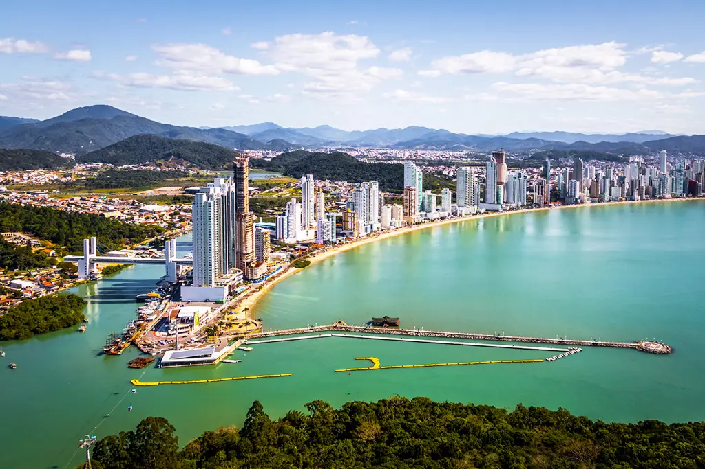

Esta é a primeira liberação da praia após o início das obras para triplicar a faixa de areia que ficava coberta pela sombra dos prédios
O trecho sul da Praia Central de Balneário Camboriú (SC), que passa por processo de alargamento da faixa de areia, foi liberado ao acesso público nesta semana. Esta é a primeira liberação da praia após o início das obras para triplicar a faixa de areia que nos dias de sol ficava coberta pela sombra dos arranha-céus.